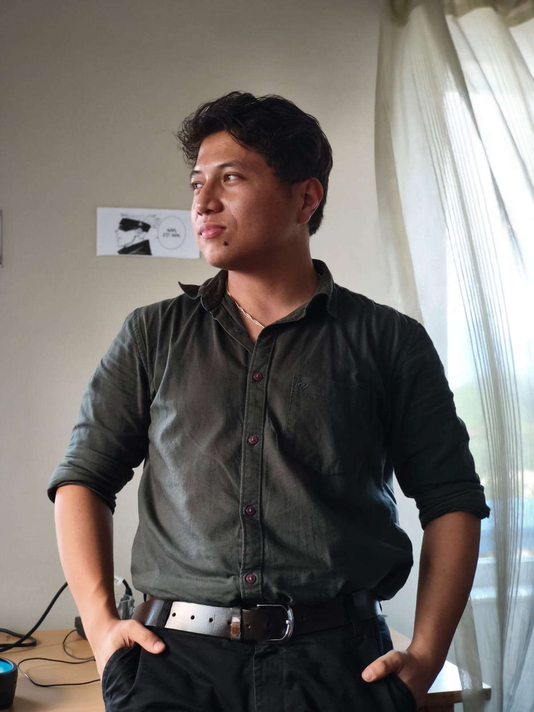

Senior Data Engineer · AI/NLP Researcher · Educator
Building ETL pipelines and dashboards that turn raw data into decisions by day, and teaching machines to listen to the world's quieter languages by night — from Bhaktapur, Nepal.

About Me
3.5 years turning messy data into production systems for banking and healthcare — and evenings spent teaching machines to understand languages mainstream AI has never heard.
I've grown from data engineering apprentice to senior engineer and architect across AWS and Azure, shipping ETL pipelines, RAG applications, and LLM tooling for clients in banking and healthcare. In parallel, I am researching on automatic speech recognition and NLP for Nepali and medical contexts. I've also worked on audio source separation for Newari traditional music, and on computer vision projects like a Nepali number plate recognition system.
I'm also an educator at heart — teaching data engineering, data analysis, and data science, and mentoring final-year students through their AI projects. I believe knowledge is worth more when it's shared, and I try to teach it as simply and widely as I can.
What I'm chasing next lives at that intersection — research built to run in production, solving real problems, not just proving a point.
“I don't think I can do this. I don't know how to do this. But I have to try. I have to try because if I don't, everything we love is gone.” — Loki (the god of stories ) 💚
Outside of work, I'm usually behind a camera, a few chapters into a book, or a few days into a trek.
Core stack
Experience & Education
Writing
Contact